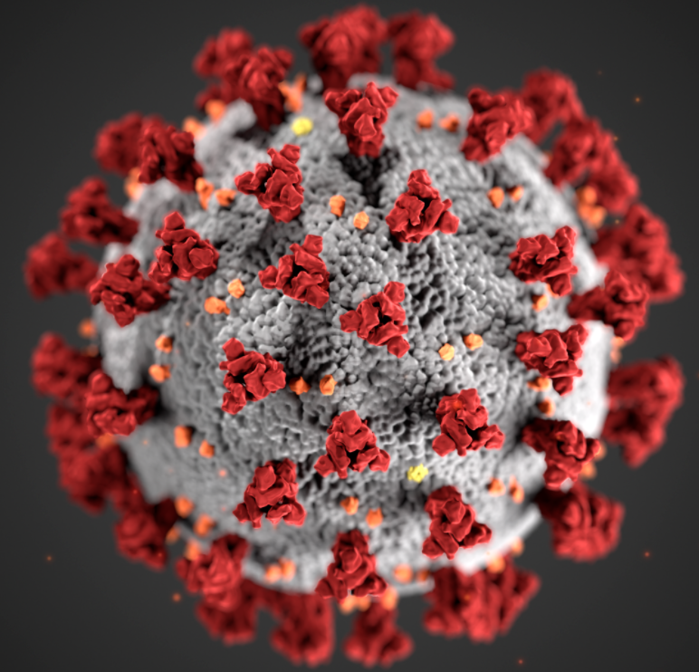

Corona Main Page
Links:
This Is The Page For Corona/ "COVID" redirects here. For the ongoing pandemic,
see COVID-19 pandemic. For other diseases caused by coronaviruses, see Coronavirus diseases.
Coronavirus disease 2019 (COVID-19) is a contagious disease caused by severe acute respiratory syndrome coronavirus 2 (SARS-CoV-2).
The first known case was identified in Wuhan, China in December 2019.
The disease has since spread worldwide, leading to an ongoing pandemic.
Symptoms of COVID-19 are variable, but often include fever,cough,headache,fatigue,breathing difficulties, and loss of smell and taste.
Symptoms may begin one to fourteen days after exposure to the virus.
At least a third of people who are infected do not develop noticeable symptoms.
Of those people who develop noticeable symptoms enough to be classed as patients, most (81%) develop mild to moderate symptoms ,
while 14% develop severe symptoms (dyspnea, hypoxia, or more than 50% lung involvement on imaging),
and 5% suffer critical symptoms (respiratory failure, shock, or multiorgan dysfunction).
Older people are at a higher risk of developing severe symptoms.
Some people continue to experience a range of effects (long COVID) for months after recovery, and damage to organs has been observed.
Multi-year studies are underway to further investigate the long-term effects of the disease.
Transmission of COVID-19 occurs when people are exposed to virus-containing respiratory droplets and airborne particles exhaled by an infected person.
Those particles may be inhaled or may reach the mouth, nose, or eyes of a person through touching or direct deposition (i.e. being coughed on).
The risk of infection is highest when people are in close proximity for a long time,
but particles can be inhaled over longer distances, particularly indoors in poorly ventilated and crowded spaces.
In those conditions small particles can remain suspended in the air for minutes to hours.
Touching a contaminated surface or object may lead to infection although this does not contribute substantially to transmission.
People who are infected can transmit the virus to another person up to two days before they themselves show symptoms,
as can people who do not experience symptoms.
People remain infectious for up to ten days after the onset of symptoms in moderate cases and up to twenty days in severe cases.
